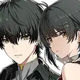

Wuthering Waves Forte Tier List
Instead of ranking characters by how powerful they are, this tier list ranks them by how self destructive their forte (powers) and mutations are. Only including game version 1.x characters.
The character's names are all under the chart and in image alt text, if you don't already know them.
| Tier |
Resonator 1 |
Resonator 2 |
Resonator 3 |
Resonator 4 |
Resonator 5 |
Resonator 6 |
| Incredibly Rough |
|
 |
|
 |
 |
 |
| Definitely Sucks |
|
 |
 |
 |
 |
| 50/50 |
|
 |
 |
 |
| Mildly Annoying |
|
|
 |
 |
|
| Helpful or Neutral |
|
 |
|
|
|
Explanations:
Warning: Some of my notes are probably wrong, to be honest.
Group 1:
- Verina - She doesn't seem to struggle too much with it but plants grow from her body, including her ears so I figure it hurts or dulls her senses a lot at some points.
- Camellya - Overclocks often, and uncontrollably. She is incredibly dangerous to herself and others and her mental state is severely impacted.
- Lingyang - Not sure if it's part of his forte/mutations but if his stories are actually about himself he physically (and painfully) made himself into a more humanoid form.
- Yangyang - Probably the absolute most useful forte of everyone in this section, but the sensory overload from perceiving so much at once takes a crazy toll on her.
- Mortefi - Has anger issues unrelated to his forte, but it kicks in based on his rage. So when he gets frustrated buildings easily go up in flames. He has to regularly get mental exams and anger management classes (but so does everyone else here so it isn't that wild).
- Sanhua - Was born blind but her forte lets her see the world around her as frequencies which she says is incredibly overwhelming/scary. She seems used to it by now though.
Group 2:
- Calcharo - Overclocks often and doesn't seem to even be fully human anymore but I don't think it actually bothers him even though it's incredibly dangerous for him and everyone around when he uses his forte.
- Changli - Fire she makes is more dangerous than average and I think her forte affects her lifespan but she makes it work.
- Danjin - In the beta version of the game she had a split personality related to her forte, it was toned down but it does still put her into a more violent state. She also has to physically hurt herself to use it.
- Jinhsi - I think her power is incredibly draining for her but she manages it very well. After awakening a second time she has better control over it all.
- Encore - Her forte seems to affect her mentally a lot but she does have good control over what she does.
Group 3:
- Yinlin - She was stillborn but her forte causes a constant electric current to flow in her body which I think is what revived her. Good and bad things come out of it.
- Xiangli Yao - If I understand correctly his forte is pretty much just a good power up, he just had to lose an arm. Even then he was really strong before having lost the arm for his new magic metal one.
- Rover - When using havoc mode Rover seems mentally troubled but other than that they seem alright in other forms so far.
- Shorekeeper - Essentially, she IS her forte since she's basically a remnant creature (like Baizhi's familiar). Her problems are mostly her inability to make decisions based on much other than pure logic I think. She's prone to self sacrifice because she still views herself as a tool more than a person.
Group 4:
- Lumi - She produces light and energy on her own, seems about it.
- Youhu - Her hands are constantly below freezing but she can deal with it by wearing gloves.
- Taoqi - Her forte drains her energy faster, so she's sleepy all the time but in exchange she has notably tougher skin. It isn't a big deal in her career either somehow.
- Yuanwu - He just has scaly skin in some places, but he isn't talked about much so idk.
- Chixia - Her body is noticeably warmer than it should be but she doesn't get hot enough to be dangerous unless she's exerting herself.
Group 5:
- Jianxin - I don't think she has any negative effects at all but it does help with her monk training and martial arts skills.
- Zhezhi - She draws things and they become somewhat real, sounds fun. She gets exploited by employers that commission her for pieces but other than that she's doing fine.
- Jiyan - I'm not sure but I think all of his problems stem more from military PTSD than anything else. His forte makes him stronger but he also gets cool dragon scales on his face and reptilian pupils so.
- Aalto - He can turn into mist at will and comes back just fine, seems about it.
- Baizhi - She's probably cool to the touch but her forte just let's her summon a familiar. It's linked to her so if something happens to it she might be messed up but that hasn't been seen.